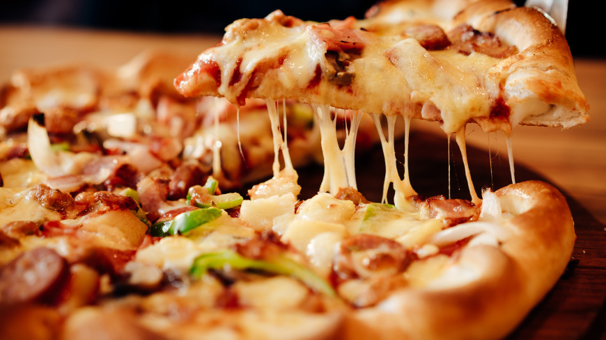

С нами вкуснее и выгоднее!
Доставка пиццы в Москве от 3,14zza
Захотелось чего-то вкусного и сытного? Желание простое и понятное, только в холодильнике все не то, и до магазина идти лень. Все пропало? Нет. Недорого заказать пиццу в Москве очень просто! Вам на помощь спешит супергерой – 3,14zza! Как у всякого супергероя, у 3,14 Pizza есть свои суперсилы: восхитительный вкус продукции из отборных ингредиентов; широкий ассортимент, включающий легендарные, фирменные и классические виды, для вегетарианцев и любителей экспериментировать; быстрая и бесплатная доставка пиццы в течение 30 минут, чтобы вкусное и ароматное блюдо не успевало остыть.
Как сделать заказ в пиццерии 3,14zza
Доставка пиццы от 3,14zza – это когда Вам не нужно никуда ехать или звонить, ведь есть Интернет. Никогда еще заказ пиццы на дом в Москве не был таким простым! Чтобы заказать пиццу онлайн, Вам необходимо: перейти в раздел "Сделать заказ",выбрать понравившийся вариант и количество порций; положить желаемое в «Корзину»; не уходить далеко, так как вкусная пицца на заказ с доставкой уже мчится к Вам из ближайшей пиццерии. И не забудьте оплатить заказ курьеру!